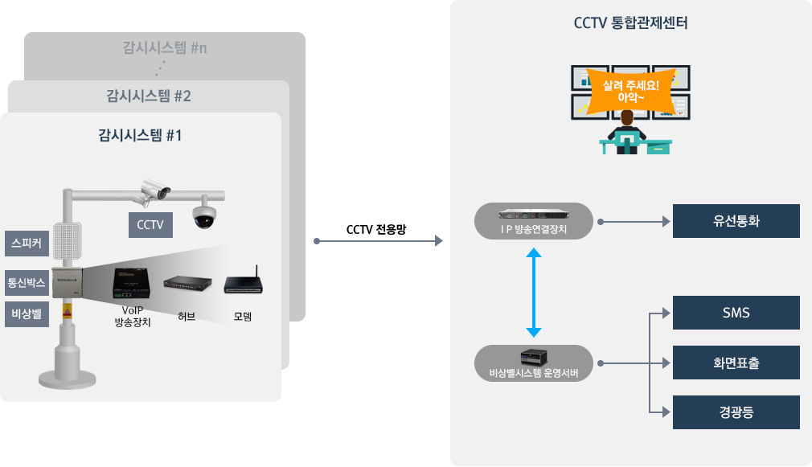
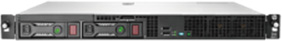
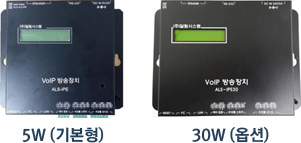
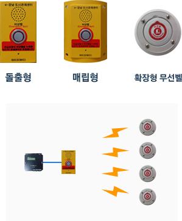
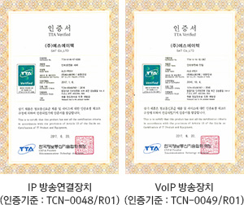

IP비상벨
-
주요기능
- 설치 VoIP방송단말의 위치정보(주소 및 상세위치) 등록이 가능하며 VoIP 방송장치 동작 유무원격 확인 및 이벤트값 보유 기능
- 자동에코제어 및 하울링 방지로 명료한 통화 음질을 제공하며, 경광등 및 외부 스피커, 사이렌 연동 가능
- CCTV연계로 범죄발생을 사전에 예방하며, 자연재해 및 재난발생, 화제, 방범등의 응급상황시 버튼하나로 CCTV통합관제센터 호출 가능
-
시스템 구성

-
장비 주요 규격
IP방송연결장치

순수 소프트웨어 기반의 호 처리 지원
자동 대역폭 선택을 위한 코덱 지원
표준 프로토콜(H.323, MGCP, SIP) 지원
음성 압축을 위한 표준 코덱 지원
구분 세부항목 규격 주요사양 CPU 2.0GHz 이상 Main Memory 4GByte 이상 HDD 300GByte 이상 Ethernet 100 / 1000 Mbps 1 Port 이상 크기 및 무게 440(W) x 430(D) x 45(H) mm, 5.5kg 주요기능 수용용량 최대 수용 사용자 : 500 / 1,000 User
동시동보 : 최대 500호기본 기능 IETF RFC3216 / 3262의 SIP표준을 지원하는 시스템 연동 일반적인 교환기 기능 지원 : 착신전환, 보류음(MOH), 발신전용(DOD) 그룹코드 발신을 통한 복수내선에 동시 착신 기능 1차 착신 무응답 시 2차, 3차 단계별 자동 발신 기능 비상벨용 내선단말에 사용자 요구에 맞는 링백톤(컬러링) 사용 및 변경 등록 기능 내선 단말의 사용목적 별 다수(10개 이상)의 방송그룹 설정 기능 순차착신 최대 10호, 동시착신 최대 10호 등록된 내선의 상태(등록, 통화) 모니터링 통화내역 실시간, 통화종료, 목록 일별, 번호 별 통화시간 비상벨시스템 운영서버
어플리케이션의 쉽고 빠른 설치 및 효율적인 유지관리
사용자 편의성을 고려한 최적의 인터페이스 제공
구분 세부항목 규격 주요사양 CPU Intel Xeon 3.0GHz 동등 및 이상 RAM 4GB DDR3 동등 및 이상 OS Windows 2000 이상 DB MSSQL 주요기능 통합 운영 관리 각 내선단말기의 현재상태(네트워크상태, 발신 중, 통화 중)표시 및 모니터링 기능 각 단말 상태 점검(마이크 , 스피커) 네트워크/단말기 장애 발생에 따른 장애경고 각종 설정 및 정보조회를 위한 웹설정 화면 제공 운영기능 단말기 추가, 수정, 삭제 처리(단말기 코드, 명칭, 위치, 주소, 위도, 경도 등 관리) 본 시스템 접근 가능 유무 및 권한 체크 기능별 멀티 인터페이스(모니터) 제공 시각적이고 접근이 용이한 메뉴 구조(각 메뉴 별 별도의 접근권한 [조회, 입력, 삭제] 부여 기능) 사용 목적 별 단말기 그룹 정보 추가, 수정, 삭제 처리 다단계 그룹 등록 가능 단말기별 1개 그룹 등록 기능 그룹 삭제 시 소속 단말기 자동 체크 기 등록된 사용자 정보 조회, 신규 사용자 정보 추가, 기존 사용자 정보수정 및 삭제 데이터 통계 및 관리 각 내선단말의 위치정보(주소 및 상세위치 설명) 등록 기능 자체 DB 관리 VoIP 방송장치 동작 유무 확인 / 이벤트 값 보유 VoIP 방송장치

자동에코제어 및 하울링 방지로 명료한 통화 음질
음성인식만으로 자동통화상태 전환
스피커 및 마이크 원격시험으로 불량감지 및 보고기능
구분 세부항목 규격 주요사양 LAN 인터페이스 10 / 100 Base Ethernet : 2Ports 오디오 인터페이스 터미널 블럭 외부 접점 입출력 Input : 2, Output : 3 음성 인식 Voice & Sound Module 탑재 명령어 : 사람살려! / 살려주세요! / 도와주세요! 60dB 이하 잡음환경의 실내 (소음이 심한 장소 적용불가) 음성인식 동작시간 예약 기능 오디오 출력 5W max @ 8Ω Speaker, 옵션 : 30W 1ch 전면표시창 2 x 16 Character LCD 사용전원 DC 5V / 2A (옵션 : DC 24V / 2A) 소프트웨어 SIP Protocol(RFC3261) 외부 연동(옵션) 경광등, 외부 스피커 및 사이렌 연동 가능 추가기능 (옵션) 센터 비상벨시스템(IP방송) 연동가능 Off-hook 시 지정번호 자동 발신 기능 제공 자동 스피커 모드 착신 기능 Web 접속 설정 기능 내부 모니터링용 스피커 내장 외부 스피커 및 마이크 불량 감지 및 보고 기능 비상벨

비상벨 하나당 N개의 무선벨로 확장 가능(화장실 같은 실내환경, 20m 이내)
구분 규격 주요사양 재질 : SUS, 크기 : 190 x 120 x 65mm
- 설치환경 및 요구사항에 따라 재질 및 크기 변경가능 마이크, 스피커(3W 이상) 동작표시 LED스위치 부착 타입 확장형 무선벨 적용으로 확장가능(N개까지)주요기능 버튼 키 접점 감시 기능 마이크 AGC(Auto Gain Control) 기능 보안 인증

행정기관 인터넷전화 보안성능품질 Ver.4 인증 (TTA 한국정보통신기술협회)
2016년 부터는 행정기관 인터넷 전화는 TTA Ver.4 인증 제품만 공공기관에 납품 가능 TTA Ver.3 주요 내용 : 통신보안 중심의 기준 표준 프로토콜(SIP, RTP) 호제어 보안, 음성트랙픽 보안 인증서 검증 코덱지원 TTA Ver.4 주요 내용 : 장비운영관리를 포함한 전체적인 보안기능 강화 TTA Ver.3 기능 포함 비밀번호 설정, 식별 및 인증 암호 보안 정도 강화(112 비트 이상 암호화 및 해시 알고리즘 사용) 원격 관리자콘솔 접속 제한 제품 자체 오류 검사 기능 관리자 계정 별 접근권한 통제 암호통신 프로토콜 사용(HTTPS, SSHv2) 전송데이터 보호(TLS1.2, SSH2.0 이상) 음성데이터 보안(AES, ARIA(국가정보원 암호 알고리즘 )) 인증서 관리 감사기록(감사 데이터 접근제한, 감사증적초과 시 관리자 확인 기능)